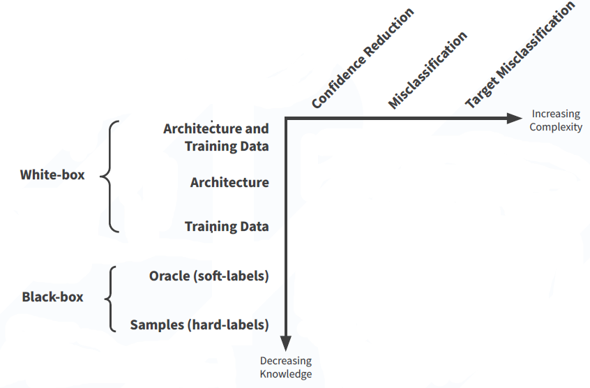
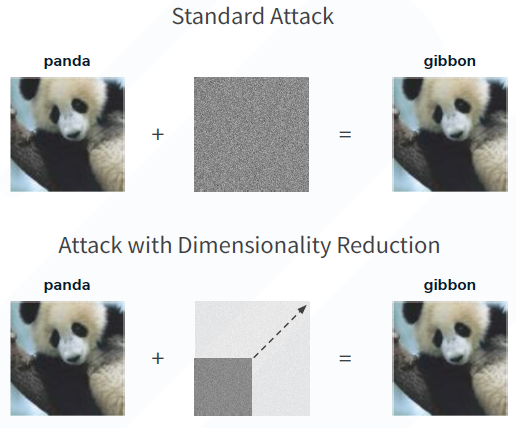
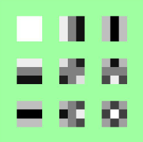
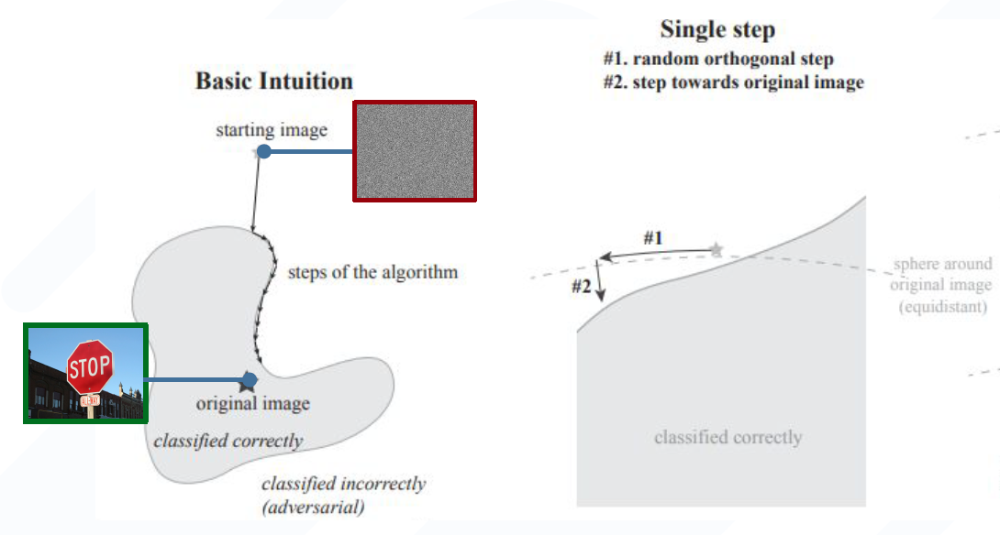

Data flow analysis in Datalog
Suppose we are given the following code (line numbering omitted):
x = source()
y = x + z
if (y > 0){
y = x + 4
}
else {
z = 2
}
sink(y)
The semantics are
- Reading untrusted input
x = source() -
Assignments:
y = x + z - Branching
-
Output sink:
sink(y)outputs the value of variableyto output
To write a datalog program that captures these semantics (encodes these programs), then we have:
//L: X = source().decl source(L: number, X: symbol)//L: sink(X).decl source(L: number, X: symbol)//L: X = Y+Z.decl assign(L: number, X: symbol, Y: symbol, Z: symbol)//L1: ...//L2: ....decl next(L1: number, L2: number)//L1: if(X) {//L2: ...//}//L3: ...//} else {.decl if(L1: number, L2: number, L3: number)//if {//...//L2: }//else {//...//L3: }//L1: ....decl join(L1: number, L2: number, L3: number)
A value is unsanitized if its value is derived from user input (ignoring implicit control-flow dependencies). Here we see a datalog program that calculates at every line all tainted values before and after execution of that line and calculates if a sink may accept an unsanitised user input:
// derived predicates .decl taintedBefore(L:number, X:symbol) .decl taintedBefore(L:number, X:symbol) // The sink argument at label L is tainted .decl unsanitized(L: number) .output unsanitized // After execution of source at line L (unsanitised user input) // the value X after line L is unsanitised taintedAfter(L, X) :- source(L, X). // Line L is unsanitized if X is the outputted at line L // and X was tainted before line L unsanitized(L) :- sink(L, X), taintedBefore(L, X). // X is tainted after line L if it was tainted // before line L and it was not assigned something else taintedAfter(L, X) :- taintedBefore(L, X), !assign(L, X, _, _). // X is tainted after L if it was assigned at a tainted value on L taintedAfter(L, X) :- assign(L, X, Y, _), taintedBefore(L, Y). taintedAfter(L, X) :- assign(L, X, _, Z), taintedBefore(L, Z). // X is tainted before a line if it was tainted // after an earlier line (all possible cases) taintedBefore(L2, X) :- next(L1, L2), taintedAfter(L1, X). taintedBefore(L2, X) :- if(L1, L2, _), taintedAfter(L1, X). taintedBefore(L3, X) :- if(L1, _, L3), taintedAfter(L1, X). taintedBefore(L1, X) :- join(L1, L2, _), taintedAfter(L2, X). taintedBefore(L1, X) :- join(L1, _, L3), taintedAfter(L3, X).
Now assume we have a sanitize function sanitize(x) which can be used to "sanitize" variables. To include this functionality in Datalog, note that
we already had a similar functionality when we specified x to be tainted-after only if it is NOT assigned to something else.
taintedAfter(L, X) :- taintedBefore(L, X), !assign(L, X, _, _), !sanitize(X).
The full project for a taint-analyzer on Ethereum smart contracts can be found at this GitHub link. As for now, let us focus on ways to attack models so that they (perhaps correctly) output "garbage dump" when they are fed an image of a WOKO student housing complex.
Black-box Attacks on Machine Learning Models
The defining question of this topic is whether ML can be deployed to the real world. Let us see some of the attacks against ML models.
Imagine you are training a model to detect pneumothorax in lungs using a chest X-ray. The doctor attaches a drain to the chest and the patient has an X-ray of his chest taken. Now, when the ML model is trained on this image, it will notice the presence of a drain. Of course, the probability that a patient has pneumothorax given he has a drain is much higer than the probability of them having the disease with no drain attached. And that is exactly what the model would do. Given an X-ray showing a drain, its prediction will be biased towards showing presence of the disease, unlike the doctor who would make his decision independent of the drain (to some extent).
There are certain threats to ML security:
- Model inversion: inverting the model to obtain the dataset
- Membership inference: given the model, knowing whether a sample was used in the training dataset
- Adversarial attack: given a correctly classified image, can the image be slightly changed so that it is no longer correctly classified
- Data poisoning: adversary injects into the training set a few correctly classified images with a small and specific pixel pattern that biases the model towards that pixel pattern
- Backdoor ML: involves the use of data poisoning but with the attack component being incorrect label produced during inference
All images are affected by adversarial attacks, and even the best model is affected by adversarial attacks.
The problem is that state of the art models are accurate but very brittle.
Adversarial robustness
In order to achieve adversarial robustness, one must specify two components:
- Specification: what are the allowed changes to the image (e.g. rotation, sheering, lighting, scaling, masked parts, etc.)
- Optimization: given the image, embedded into the input space, and the allowed modifications (defining a hyperplane of samples around the original input), can we obtain an incorrect label for a sample from this hyperplane.
Recall the task of model training is to find \[ \text{argmin}_{\theta} E_{(\textbf{x, y}) \sim D} \ loss(\theta, \textbf{x}, \textbf{y}) \]
However, for adversarial attack the task is to find, \[ \text{argmax}_{|| \delta|| < \epsilon } \ loss(\theta, \textbf{x}+\delta, \textbf{y}) \]
with the update being,
\[\delta \leftarrow \delta - \nabla loss(\theta, \textbf{x}+\delta, \textbf{y}) \]
Attack taxonomy

Note that as we go right-down the attack difficulty increases, and that we can aim for attacks that change the label to some defined target label or just an incorrect label (easier).
Generating Perturbations
Algorithm I: Random Perturbation
δ = 0
while y != argmaxi fi(x+δ):
δ <- U(0,1)
The algorithm keeps sampling a uniformly distributed perturbation until the classifier outputs the adversarial target class. This is of course the simplest approach and achieves 0 to 10% attack success rate (ASR) even after half a million queries.
Algorithm II: Genetic Perturbations
The high level idea is creating initial generation, with size N, based on the original input x and the p-code explains the rest
// Create initial generation
For i = 1..N
P 0i <- x + U(-δ, δ)
For all generations do:
For every member of the generation do:
Compute the fitness of the member
If label of "most fit" member is the target t:
return success
Compute selection probabilities ("fitter" members more likely selected)
For every member of the generation do:
Apply mutations and clipping to new child input
Add mutated child to next generation
Adaptively update α (mutation range) and ρ (mutation prob.) variables
The algorithm achieves 95% to 100% ASR using around 100,000 queries. A possible optimization is that instead of independently modifying every single pixel, to instead modify nearby pixels together using a smaller noise mask:
This in turn drives the number of queries down to ~20,000.
Algorithm III: SimBA (untargeted)
δ = 0
py = fy(x)
while y = argmaxi fi (x+δ):
pick randomly and without replacement q ∈ Q
for 𝛼 ∈ {𝜀, -𝜀} do
pynew = fy (x + 𝛿 + 𝛼q)
if pynew < py
𝛿 = 𝛿 + 𝛼q
py = pynew
break
where Q is an orthonormal basis for image inputs. This basis can be the normal cartesian basis (if you think of each N-by-N image as vector of length \(N^2\) then this is the normal canonical basis for these vectors). Another basis is the DCT (discrete cosine transform) basis (non-coincidentally used in JPEG image compression):
The idea is that 9x9 images are encoded using 9 numbers which represent the coefficients of the following 9x9 single-channeled matrices: 
Each of these 9 squares has entries determined by the discrete cosine function sampled at fixed points. Reducing the size of the basis to something below 9 will result in some compression for 9x9 images (see weitz.de/dct/). Same idea applies for 32x32 images using 32*32=1024 DCT bases matrices. Hence, dimensionality reduction can be achieved by limited the number of basis matrices.
For untargeted adversarial attacks, the DCT-basis SimBA algorithm performs better with ~1000 queries (~97% ASR). However, the Cartesian-basis SimBA performs better on the targeted case with ~10,000 queries and 100% ASR.
Algorithm IV: Boundary Attack
The most beautiful attack in my opinion: this attack walks in reverse by starting with a random noise image, represented as x in original input space, and then repeatedly does a step which consists of a random orthogonal step followed by a step toward the original meaningful image.
The algorithm can be visualized as:

The idea is summarized as,
How close can we get to the actual image so as to resemble the image while still being classified incorrectly?
This attack is decision based as it relies only on hard labels and uses gaussian noise for the orthogonal perturbations.
Algorithm V: Guessing smart
Also decision-based attack, this attack takes two images, the original and the target label, and applies boundary attack by changing only the relevant regions in the original image. This relevant region is obtained by the mask which emphasizes the areas of both images which are different. This helps prevent modiying background pixels depicting the sky for example.